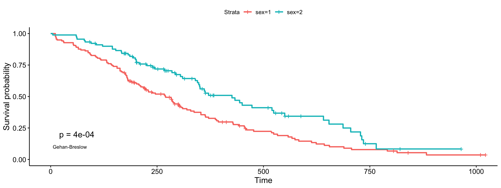
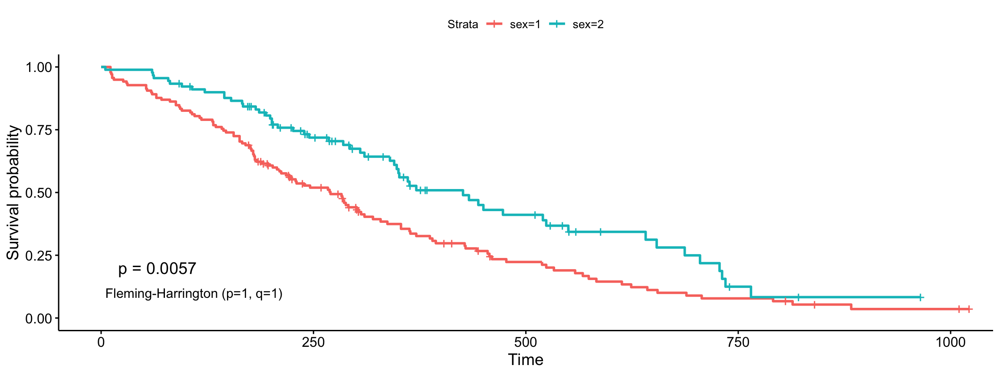

Specifiyng weights in Log-rank comparisons
Marcin Kosinski
created 29-01-2017, revised 22-08-2018
Specifiying_weights_in_log-rank_comparisons.Rmdlibrary("survminer")This vignette covers changes between versions 0.2.4 and 0.2.5 for specifiyng weights in the log-rank comparisons done in
ggsurvplot().
Log-rank statistic for 2 groups
As it is stated in the literature, the Log-rank test for comparing survival (estimates of survival curves) in 2 groups (\(A\) and \(B\)) is based on the below statistic
\[LR = \frac{U^2}{V} \sim \chi(1),\]
where \[U = \sum_{i=1}^{T}w_{t_i}(o_{t_i}^A-e_{t_i}^A), \ \ \ \ \ \ \ \ V = Var(U) = \sum_{i=1}^{T}(w_{t_i}^2\frac{n_{t_i}^An_{t_i}^Bo_{t_i}(n_{t_i}-o_{t_i})}{n_{t_i}^2(n_{t_i}-1)})\] and
- \(t_i\) for \(i=1, \dots, T\) are possible event times,
- \(n_{t_i}\) is the overall risk set size on the time \(t_i\) (\(n_{t_i} = n_{t_i}^A+n_{t_i}^B\)),
- \(n_{t_i}^A\) is the risk set size on the time \(t_i\) in group \(A\),
- \(n_{t_i}^B\) is the risk set size on the time \(t_i\) in group \(B\),
- \(o_{t_i}\) overall observed events in the time \(t_i\) (\(o_{t_i} = o_{t_i}^A+o_{t_i}^B\)),
- \(o_{t_i}^A\) observed events in the time \(t_i\) in group \(A\),
- \(o_{t_i}^B\) observed events in the time \(t_i\) in group \(B\),
- \(e_{t_i}\) number of overall expected events in the time \(t_i\) (\(e_{t_i} = e_{t_i}^A+e_{t_i}^B\)),
- \(e_{t_i}^A\) number of expected events in the time \(t_i\) in group \(A\),
- \(e_{t_i}^B\) number of expected events in the time \(t_i\) in group \(B\),
- \(w_{t_i}\) is a weight for the statistic,
also remember about few notes
\[e_{t_i}^A = n_{t_i}^A \frac{o_{t_i}}{n_{t_i}}, \ \ \ \ \ \ \ \ \ \ e_{t_i}^B = n_{t_i}^B \frac{o_{t_i}}{n_{t_i}},\] \[e_{t_i}^A + e_{t_i}^B = o_{t_i}^A + o_{t_i}^B\]
that’s why we can substitute group \(A\) with \(B\) in \(U\) and receive same results.
Weighted Log-rank extensions
Regular Log-rank comparison uses \(w_{t_i} = 1\) but many modifications to that approach have been proposed. The most popular modifications, called weighted Log-rank tests, are available in ?survMisc::comp
-
nGehan and Breslow proposed to use \(w_{t_i} = n_{t_i}\) (this is also called generalized Wilcoxon), -
srqtNTharone and Ware proposed to use \(w_{t_i} = \sqrt{n_{t_i}}\), -
S1Peto-Peto’s modified survival estimate \(w_{t_i} = S1({t_i}) = \prod_{i=1}^{T}(\frac{1-e_{t_i}}{n_{t_i}+1})\), -
S2modified Peto-Peto (by Andersen) \(w_{t_i} = S2({t_i}) = \frac{S1({t_i})n_{t_i}}{n_{t_i}+1}\), -
FHFleming-Harrington \(w_{t_i} = S(t_i)^p(1 - S(t_i))^q\).
Watch out for
FHas I submitted an info on survMisc repository where I think their mathematical notation is misleading for Fleming-Harrington.
Why are they useful?
The regular Log-rank test is sensitive to detect differences in late survival times, where Gehan-Breslow and Tharone-Ware propositions might be used if one is interested in early differences in survival times. Peto-Peto modifications are also useful in early differences and are more robust (than Tharone-Whare or Gehan-Breslow) for situations where many observations are censored. The most flexible is Fleming-Harrington method for weights, where high p indicates detecting early differences and high q indicates detecting differences in late survival times. But there is always an issue on how to detect p and q.
Remember that test selection should be performed at the research design level! Not after looking in the dataset.
Plots
After preparing a functionality for this GitHub’s issue Other tests than log-rank for testing survival curves and Log-rank test for trend we are now able to compute p-values for various Log-rank test in survminer package. Let as see below examples on executing all possible tests.
Log-rank (comp)
ggsurvplot(fit, data = lung, pval = TRUE, pval.method = TRUE,
log.rank.weights = "1")
Gehan-Breslow (generalized Wilcoxon)
ggsurvplot(fit, data = lung, pval = TRUE, pval.method = TRUE,
log.rank.weights = "n", pval.method.coord = c(5, 0.1),
pval.method.size = 3)
Tharone-Ware
ggsurvplot(fit, data = lung, pval = TRUE, pval.method = TRUE,
log.rank.weights = "sqrtN", pval.method.coord = c(3, 0.1),
pval.method.size = 4)
Peto-Peto’s modified survival estimate
ggsurvplot(fit, data = lung, pval = TRUE, pval.method = TRUE,
log.rank.weights = "S1", pval.method.coord = c(5, 0.1),
pval.method.size = 3)modified Peto-Peto’s (by Andersen)
ggsurvplot(fit, data = lung, pval = TRUE, pval.method = TRUE,
log.rank.weights = "S2", pval.method.coord = c(5, 0.1),
pval.method.size = 3)Fleming-Harrington (p=1, q=1)
ggsurvplot(fit, data = lung, pval = TRUE, pval.method = TRUE,
log.rank.weights = "FH_p=1_q=1",
pval.method.coord = c(5, 0.1),
pval.method.size = 4)
References
Gehan A. A Generalized Wilcoxon Test for Comparing Arbitrarily Singly-Censored Samples. Biometrika 1965 Jun. 52(1/2):203-23.
Tarone RE, Ware J 1977 On Distribution-Free Tests for Equality of Survival Distributions. Biometrika;64(1):156-60.
Peto R, Peto J 1972 Asymptotically Efficient Rank Invariant Test Procedures. J Royal Statistical Society 135(2):186-207.
Fleming TR, Harrington DP, O’Sullivan M 1987 Supremum Versions of the Log-Rank and Generalized Wilcoxon Statistics. J American Statistical Association 82(397):312-20.
Billingsly P 1999 Convergence of Probability Measures. New York: John Wiley & Sons.